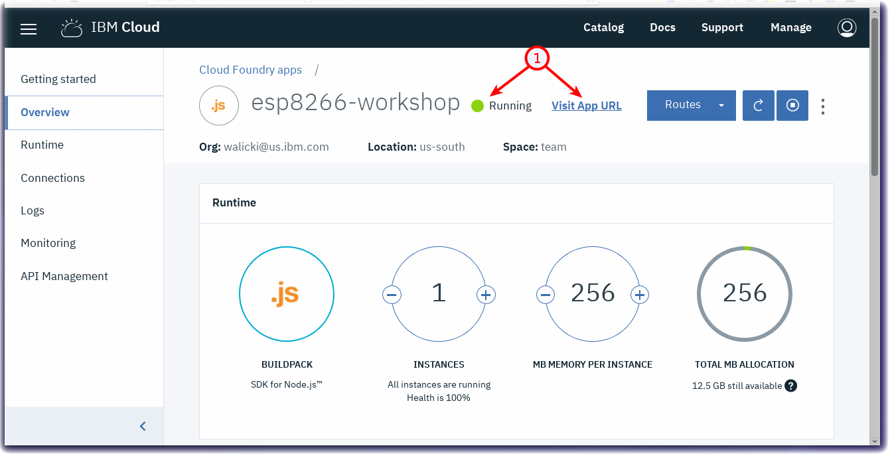
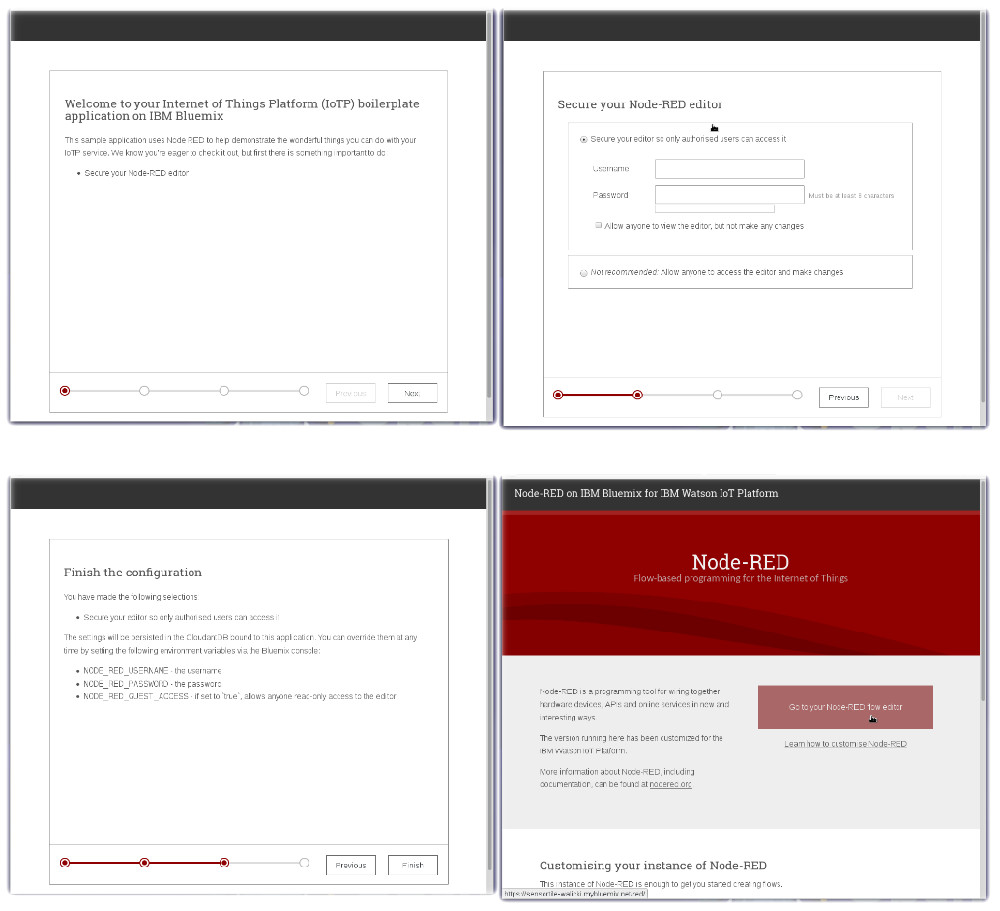
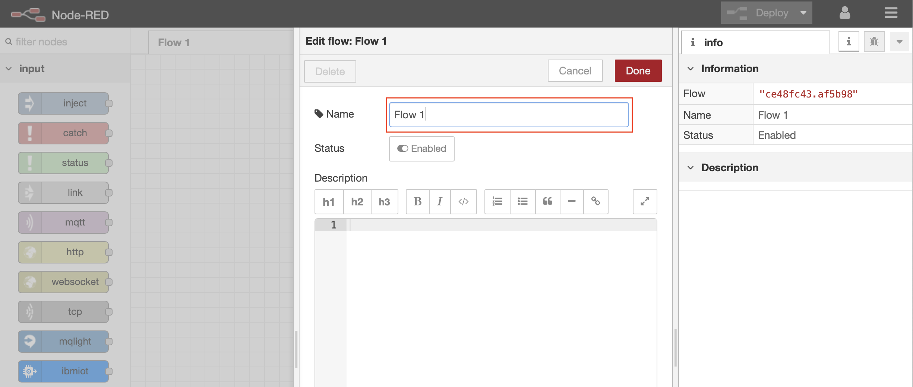
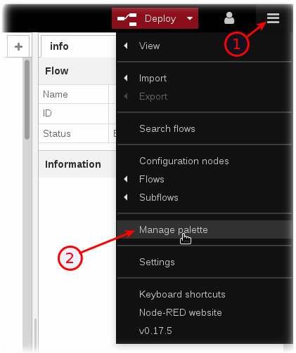
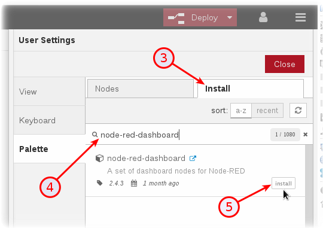
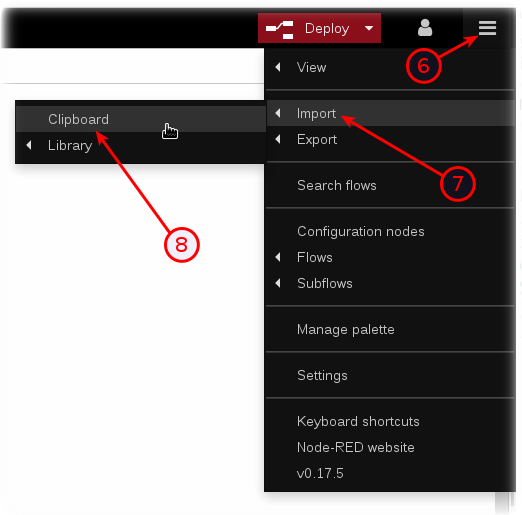
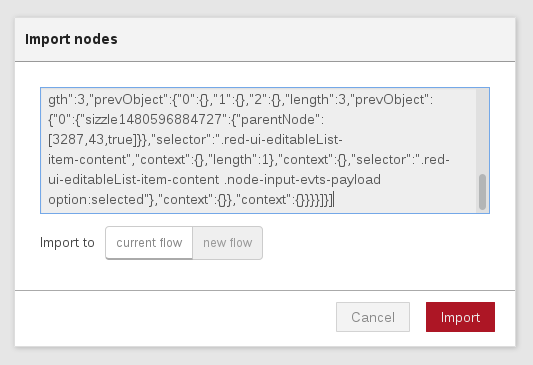

Node-RED Set up and Configuration in IBM Cloud
Lab Objectives
In this lab you will set up Node-RED in your Watson IoT Starter application created at the end of Part 1. You will learn:
- Node-RED Visual Programming
- How to secure your Node-RED Editor in IBM Cloud
- How to install additional Node-RED nodes
- How to import a prebuilt flow from GitHub
Introduction
Node-RED is an open-source Node.js application that provides a visual programming editor that makes it easy to wire together flows.
Step 1 - Node-RED Visual Programming
Recall that in Part 1, you created a IoT Starter Application. Once the application is running, click the View App URL button (1) 
Step 2 - How to secure your Node-RED Editor in IBM Cloud
A new browser tab will open to the Node-RED start page. Proceed through the setup pages by selecting a username / password to access the Node-RED editor. Remember your username / password. Click the red button Go to your Node-RED flow editor to launch the editor. 
- The Node-RED Visual Programming Editor will open with a default flow
- On the left side is a palette of nodes that you can drag onto the flow
- You can wire nodes together to create a program
- Double Click on the Flow 1 tab header
- Rename this tab from Flow 1 to Receive ESP8266 Data 
Step 3 - How to install additional Node-RED nodes (Information only)
- The IoT Starter Application deployed into IBM Cloud includes just a small subset of Node-RED nodes. The Node-RED palette can be extended with over one thousand additional nodes for different devices and functionality. These NPM nodes can be browsed at http://flows.nodered.org
- In part 1 you updated the Application configuration to add the dashboard nodes, you could have also used the Node-RED menu item Manage palette to add the nodes
- Click on the Node-RED Menu (1) in the upper right corner, then Manage palette (2)

- Turn to the Install tab (3), type the name of the node you want to install (4) and press the Install button (5).

- Press the Install button in the next dialog.
Step 4 - How to import a prebuilt flow from GitHub
In this step, you will learn how to Import a prebuilt flow from GitHub
- Since configuring Node-RED nodes and wiring them together requires many steps to document in screenshots, there is an easier way to build a flow by importing a prebuilt flow into your IoT Starter Application.
- Not here in Step 4, but in several sections below, there will be a Get the Code link.
- When instructed in those later sections, open the Get the Code github URL, mark or Ctrl-A to select all of the text, and copy the text for the flow to your Clipboard.
- Click on the Node-RED Menu (6), then Import (7), then Clipboard (8).

- Paste the text of the flow into the Import nodes dialog and press the red Import button.

- The new flow will be imported into a new tab in the Node-RED Editor.
- Click the Deploy button on the top of menu bar to deploy the Node-RED flow.